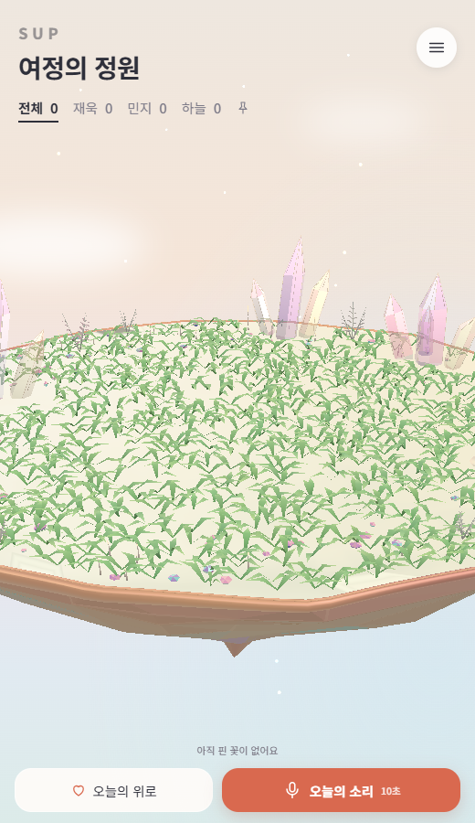
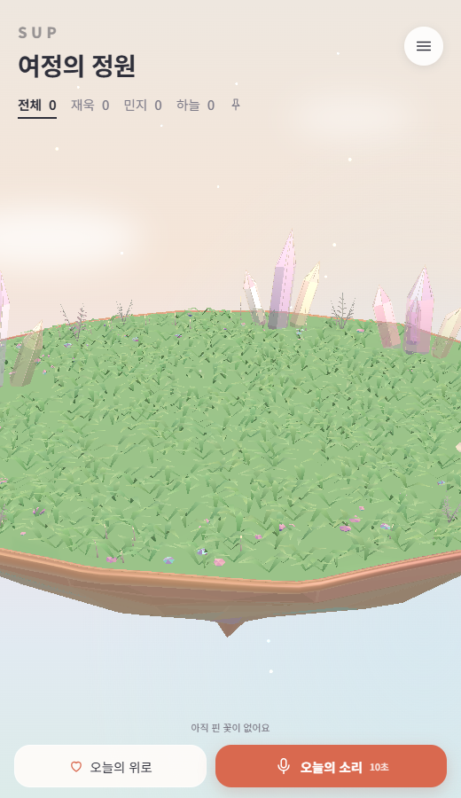
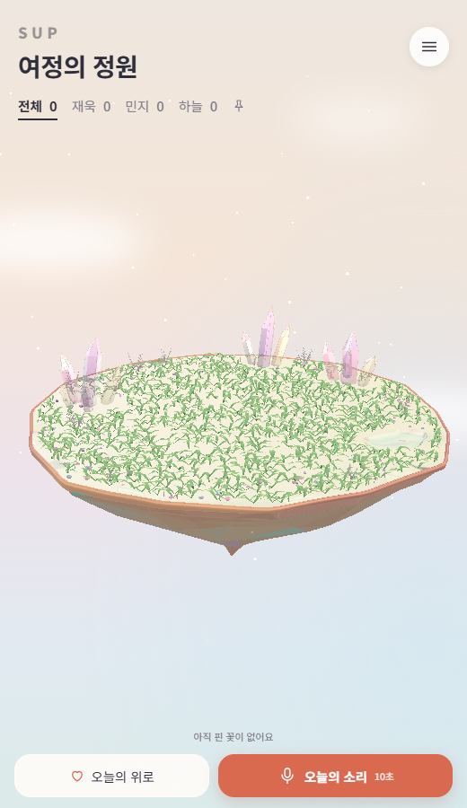
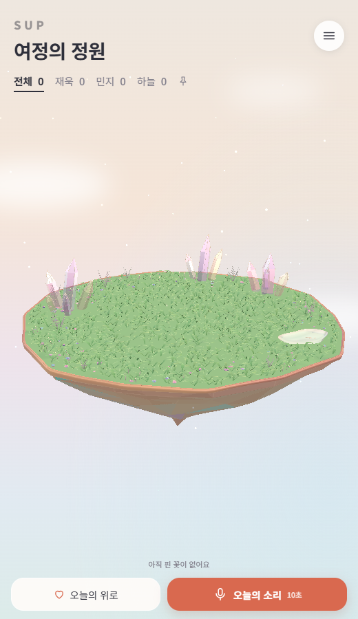
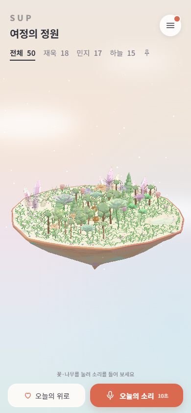
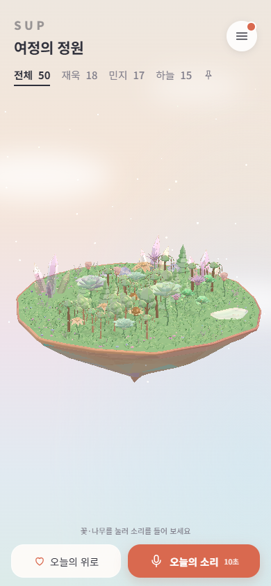
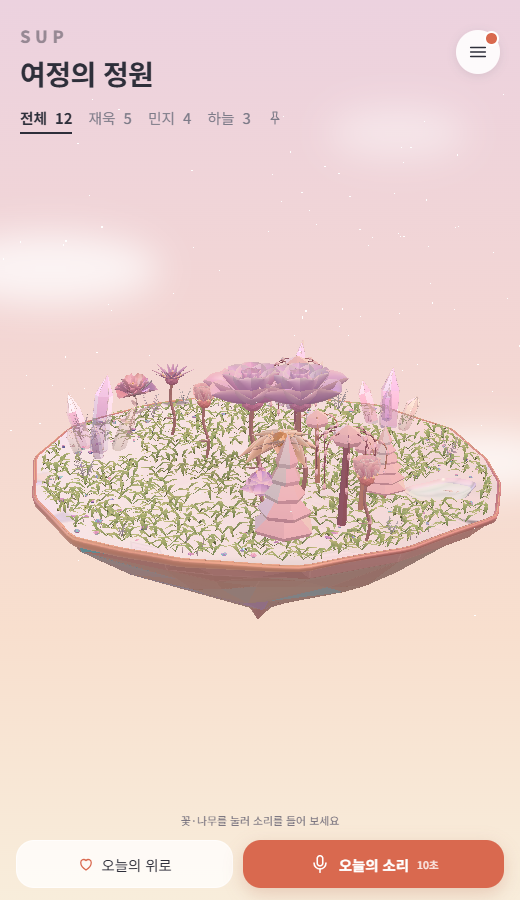
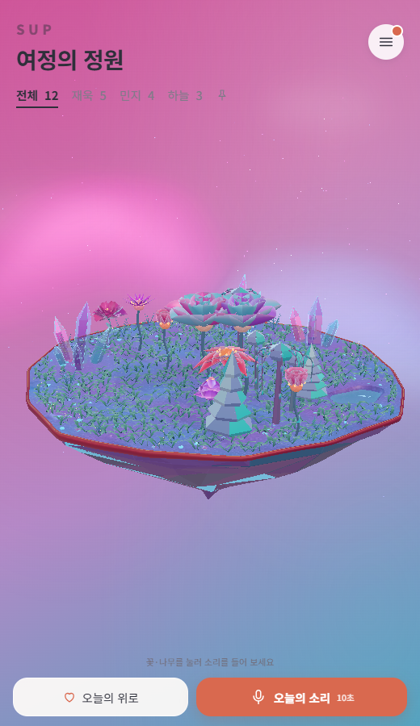
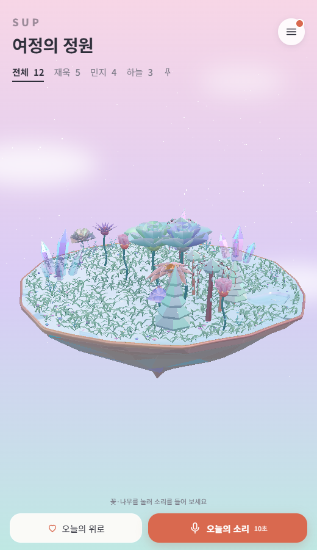

Balanced Warm: sage ground matching its grass
Only the named planting surface changes. The ground uses the existing Balanced grass midtone, #91BD92, with roughness 0.90, no clearcoat and restrained reflections. Gentle authored tonal variation and the existing normal map remain. Pond, crystals, underside, rim, plants and grass geometry are preserved.
Baseline: origin/main at d5b12a3. Each pair uses the same camera, fixed date and animation time. Validation report
Planting surface close-up
Before
After
Empty garden
Before
After
50 received plants plus pair flowers
Mobile portrait · dense garden
Before
After
Warm Opal · unchanged
Before
After
Aurora Crystal · unchanged
Before
After
Original Opal · unchanged
Before After
After